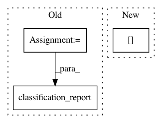

92bba3102bed7256aa22c0ab273139048aa23559,yellowbrick/classifier.py,ClassifierReport,score,#ClassifierReport#Any#Any#,78
Before Change
Generates the Scikit-Learn classification_report
// TODO: Do a better job of guessing defaults from the model
cr_kwargs = {
"labels": kwargs.pop("labels", None),
"target_names": kwargs.pop("target_names", None),
"sample_weight": kwargs.pop("sample_weight", None),
"digits": kwargs.pop("digits", 2)
}
self.report = classification_report(y_true, y_pred, **cr_kwargs)
def render(self):
After Change
self.keys = ("precision", "recall", "f1")
self.scores = precision_recall_fscore_support(y, y_pred, labels=self.classes)
self.scores = map(lambda s: dict(zip(self.classes, s)), self.scores[0:3])
self.scores = dict(zip(self.keys, self.scores))
self._draw(y, y_pred)
In pattern: SUPERPATTERN
Frequency: 3
Non-data size: 3
Instances
Project Name: DistrictDataLabs/yellowbrick
Commit Name: 92bba3102bed7256aa22c0ab273139048aa23559
Time: 2016-10-01
Author: bilbro@gmail.com
File Name: yellowbrick/classifier.py
Class Name: ClassifierReport
Method Name: score
Project Name: scikit-learn/scikit-learn
Commit Name: a49752375d5775b1f0e6393a811c937332dccb18
Time: 2020-05-17
Author: jliu176@gmail.com
File Name: examples/compose/plot_column_transformer.py
Class Name:
Method Name:
Project Name: scikit-image/scikit-image
Commit Name: 7d949ddda1c424773171a1db21f68eb8e6bb17cd
Time: 2018-05-07
Author: juan.n@unimelb.edu.au
File Name: doc/examples/xx_applications/plot_haar_extraction_selection_classification.py
Class Name:
Method Name: